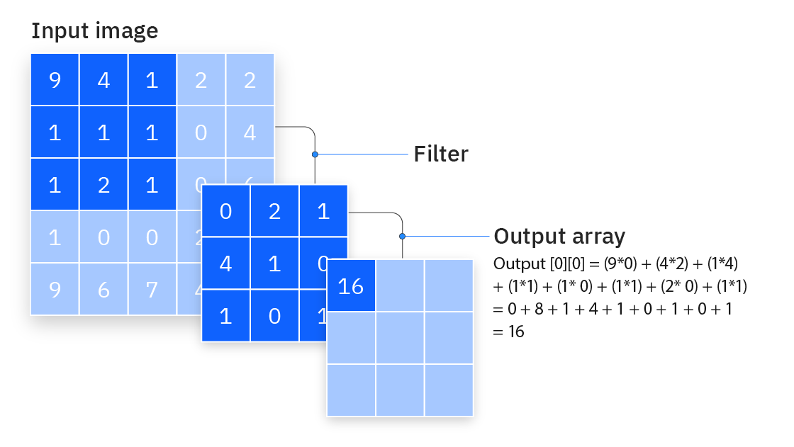
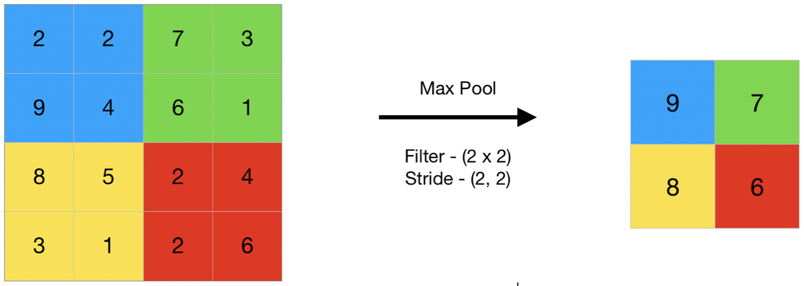
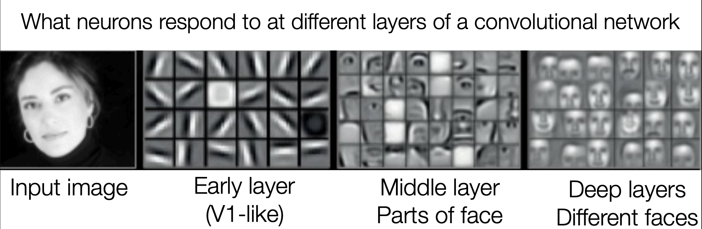
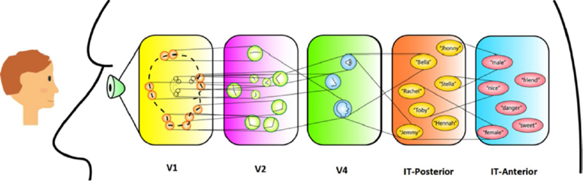
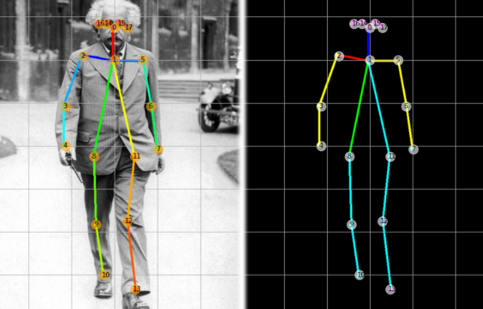

Lecture 04
Introduction to convolutional neural network (CNN)
+
example application: pose detection with PoseNet
Welcome 👩🎤🧑🎤👨🎤
By the end of this lecture, we'll have learnt about:
The theoretical:
- new AI model unlocked 🔓: convolutional neural network
- cool AI application unlocked 🔓💃: pose detection
The practical:
- CNN implemented in python using PyTorch
First of all, don't forget to confirm your attendence on
Seats App!
as usual, a fun AI project
Discrete
Figures to wake us up
- we'll inspect the AI model related to this project later!
Recap of past two weeks
🧫 Biological neurons: receive charges, accumulate charges, fire off charges
🧫 Biological neurons (continued)
-- This "charging, thresholding and firing" neural process is the backbone of taking sensory input, processing and
conducting motory output.
🤖 Artificial neurons
- Think of a neuron as a number container that holds a single number, activation. 🪫🔋
- Neurons are grouped in layers. 🏘️
- Neurons in different layers are connected hierarchically (usually from left to righ) 👉
- There are different weights assigned to each link between two connected neurons. 🔗
🏘️ Layers in MLP
- Put each layer's activations into a vector: a layer activation vector 📛
🏘️ Layers in MLP
- Input layer: each neuron loads one value from the input (e.g. one pixel's greyscale value in the MNIST
dataset)👁️
🏘️ Layers in MLP
- Output layer: for image classification task, one neuron represents the probability this neural net assigns
to one class🗣️
🏘️ Layers in MLP
- Hidden layer: any layer between the input and output layers, and the size (number of neuron) is user-specified
🏴☠️
🤖🧮 The computational simulation of the "charging, thresholding and firing" neural process
-- "charging" ⚡️: W x Input
-- "thresholding" 🪜: ReLU(W x Input - B)
Wait but what numbers shall we put in the weights matrices and bias vectors? 🥹
- Numbers in the weights matrices and bias vectors are parameters 🎛️
- The parameters are learned via training with a dataset.
- The training (aka parameter tweaking) process is done through backpropogation by "gradient
descent" ⏪
well done everyone 🎉
end of recap 👋
Today we are going to look at the stepstone of (almost) every advanced image-dealing AI models
- convolutional neural network
Fully connected layer 🥹
There is more than one type of connection between consecutive layers.
The type of connection we have seen in the MLP layers is "fully connected layer"
Simply because every neuron is connected to every neuron in previous layer
This full connectivity brings a convenience for us as NN architects.
When defining a fully connected layer, the only quantity (aka hyper-parameter) to be specified, which is left to our
choice, is the numebr of neurons in this layer.
Once that choice is made,
the shapes of weights matrix and bias vector would be automatically calculated using #of neurons in this layer times
#of neurons in previous layer.
let's confirm we have learned something today by revisiting
this
model training process, especially "Set up the layers" part
Our first time hands-on tweaking with a neural network:
add another fully connected layer comprising [your choice here] neurons
Help me with basic maths: how many parameters are there for this MLP that handle this more practical input data?
hint: use the shape of weights matrix and bias vector
Apparently we don't encounter image of 28x28 much often, say if we have more realistic images of 1024 x 1024
With the task being a dog-or-not classification problem
The size of input layer?
1,048, 576 ~= 1m
With first hidden layer having 1000 neurons, what is the size of this weights matrix?
~= 1B
This number of parameters is probably more than the number of dogs in the world (check this up) 🎃
Recall that we oNLy have 100 billion neurons 😈
Imagine that with 100 different 1024x1024 image classifications models and our brain juice is drained 😵
When the task and data get slightly more difficult... the constraint of FC layer becomes prominent:
the curse of dimensionality (CoD)
sorry, fully connected layer 🥹
Reflection on why FC layer suffers from CoD:
1. everything connects to everthing
2. every connection has its own weight
hence the big weight matrix size
🫥 bye MLP for now
Introducing... convolutional neural network!
CNN is the stepstone for working with vision or any 2D data.
It is a variant on top of MLP, most things remain the same (it has input output layer, and fully connected layer🤨)
New ideas in CNN are essentially two new layer types introduced: convolutional layer and pooling layer
Convolution and conv layer 🫣
-- convolution is a math operation that is a special case of "multiplication" applied between two matrices
-- just another meaningful computation rules 🤠
-- check
this video out for a very smooth introduction
Good thing about CNN 01:
Because convolution operation can be defined in 2D, image data can retain its 2D structure.
It means that in the input layer, there is no need to flatten the 2D input.
(recall the cost of losing neighboring information in flattening)

Convolution is actually quite easy:
- "filter" in the image is the weights matrix
- element-wise multiplication between input and filter matrices
- sum up the element-wise products to one number, similar to dot product
- then slide the filter to the next part of input and repeat the above, all the way till the last patch of the input image.
Some intuitions on conv
- view the weights matrix here as a filter that has a graphical pattern on it,
- by convolute a filter with input image,
- it can detect if that graphical pattern is present in the image or not
- ( how similar it is between the filter pattern and input image)
3B1B smashes it again
Now we know what convolution is, a convolution layer is just a layer comprising a set of filters with following
specifications:
- Kernel size: size of filter (e.g. 3x3, 5x5)
- Number of channels: number of total filter (e.g. 32, 64)
- stride: how do you slide the filter over the input (e.g. 1, 3 )
- padding: usually used when the filters do not fit the input image
(
more details here fyi )
Recall layer activation vectors in MLP?
in CNN, the input and output of a conv layer is called "feature maps" (2D feel huh)
Conv layer is profound
-- this single math operation is a game changer in AI, it made up the "first" working AI model in 1998 by Lecun Yann
-- reduced connectivity (see next slides)
-- shared(copied/tied) weights (see next slides)
-- its design coincides with image's intrinsic properties, right tool for the right problem (e.g. self-similarity as
shown later)
Conv layer why cool:
-- reduced connectivity: a neuron only connects to some of the neurons in prev layer
-- not one link one weight anymore: the connection weights are shared (copied) across different links
-- image has self-similarity structure (patches at diff locations looks similar)
That's quite a lot, congrats! 🎉
It also helps me get a job lol,
this is the
exact CNN that helped my previous job a looot
Pooling layer (max pooling or average pooling):
- no parameters/weights
- just an operation of taking the max/avg pixel values in a given neighborhood from the input
- "downsample" (like blurring the image)

max pooling is just another easy math operation, it reduces each dimension by half in this example
Why pooling layer? some intuitions... 🤖
- to compensate the fact that conv layer cannot largely reduce the dimension.
why do we need dimension reduction?
- to squeeze information into more general ones,
- and max pooling does dimension reduction brutally, with no parameters to be learned
😈 End of noodling!!! Here is a takeaway message:
- In CNN, there is a typical mini-architecture of having a conv layer followed by a pooling layer.
- The ordered layering of "conv+pooling" is very conventional, like shown in the
VGG Net.
- Sometimes it is called a "conv block" or "conv module".
- The process of designing a CNN architecture is mostly just stacking conv blocks, and add some FC layers in the end
Here are what we have talked so far:
- 🍰Convolution operation and conv layer
-- 🤘conv layer why cool? efficient (less parameters) and effective (very handy in image processing)
- 🍰Pooling operation and pooling layer
-- 🤘pooling layer why cool? it does dimension reduction, VERY simply (no parameters)
- 🍔A conv block: conv + pool layer
- 🍔🍔 CNN: stacked conv blocks, sometimes with FC layers in the end
That's quite a lot, congrats! 🎉
Intuitions time: the hierachical feature extractions in CNN
Here is a visualisation of "hierachical 2D features extraction done properly by CNN"

https://cs.colby.edu/courses/F19/cs343/lectures/lecture11/Lecture11Slides.pdf

Filters in different conv layers are doing pattern detection with an overall hierarchical structure, which is again biologically inspired!
Introducing Pose detection 💃🕺:

- Input: a digital image
- Output: a set of coordinates corresponding to different key points on human body (similar with landmarks on
face)
That's quite a lot, congrats! 🎉
Let's take a look at
this notebook!
- on how to train a CNN using PyTorch
- 1. Make sure you have saved a copy to your GDrive or opened in playground. 🎉
- 2. Most parts are out of the range of the content we have covered so far.
- 3. Your task: find the line of codes where the
conv
layer specifications aka hyperparameters are defined.
- 4. hint: it is something related to nn.Conv2D()
Today we have looked at:
- CNN is better at image tasks than MLP: efficient and effective
- CNN with two new layer types: conv layer and pooling layer
- Conv layer: a set of filters 🔎
- Pooling layer: take avg/max in each patch 🌫️
- A conv block: conv layer + pooling layer 🍔
- CNN: input layer, conv blocks, fc layer, output layer 🍔🍔
- Pose detection application: a model that detects key points on human body🩻
- PoseNet as an example of real-life sized CNN 💃
We have gone through some MSc-level content today, congrats!!!
- It's okay if you have not grasped all the details yet, this lecture serves as a demystifying purpose.
This is the simple takeaway message on what's going on inside an AI model (CNN) in action: extracting features
hierachically 🪜
We'll see you next week same time and same place!
{kind=link}